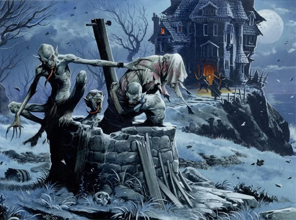

A ghoul (from Arabic: غول, ghūl) is a demon-like being or monstrous humanoid. The concept originated in pre-Islamic Arabian religion, associated with graveyards and the consumption of human flesh. Modern fiction often uses the term to label a certain kind of monster. By extension, the word ghoul is also used in a derogatory sense to refer to a person who delights in the macabre or whose occupation directly involves death, such as a gravedigger or graverobber.

In Arabic folklore, the ghul is said to dwell in cemeteries and other uninhabited places. A male ghoul is referred to as ghul while the female is called ghulah. A source identified the Arabic ghoul as a female creature who is sometimes called Mother Ghoul (ʾUmm Ghulah) or a relational term such as Aunt Ghoul. She is portrayed in many tales luring hapless characters, who are usually men, into her home where she can eat them. Some state that a ghoul is a desert-dwelling, shapeshifting demon that can assume the guise of an animal, especially a hyena. It lures unwary people into the desert wastes or abandoned places to slay and devour them. The creature also preys on young children, drinks blood, steals coins, and eats the dead, then taking the form of the person most recently eaten. One of the narratives identified a ghoul named Ghul-e Biyaban, a particularly monstrous character believed to be inhabiting the wilderness of Afghanistan and Iran. Al-Dimashqi describes the ghoul as cave-dwelling animals who only leave at night and avoid the light of the sun. They would eat both humans as well as animals. It was not until Antoine Galland translated One Thousand and One Nights into French that the Western concept of ghouls was introduced into European society. Galland depicted the ghoul as a monstrous creature that dwelled in cemeteries, feasting upon corpses.
The word ghoul entered the English tradition and was further identified as a grave-robbing creature that feeds on dead bodies and children. In the West, ghouls have no specific shape and have been described by Edgar Allan Poe as "neither man nor woman... neither brute nor human." In "Pickman's Model", a short story by H. P. Lovecraft, ghouls are members of a subterranean race. Their diet of dead human flesh mutated them into bestial humanoids able to carry on intelligent conversations with the living. The story has ghouls set underground with ghoul tunnels that connect ancient human ruins with deep underworlds. Lovecraft hints that the ghouls emerge in subway tunnels to feed on train wreck victims. Lovecraft's vision of the ghoul, shared by associated authors Clark Ashton-Smith and Robert E. Howard, has heavily influenced the collective idea of the ghoul in American culture. Ghouls as described by Lovecraft are dog-faced and hideous creatures but not necessarily malicious. Though their primary (perhaps only) food source is human flesh, they do not seek out or hunt living people. They are able to travel back and forth through the wall of sleep. This is demonstrated in Lovecraft's "The Dream Quest of Unknown Kadath" in which Randolph Carter encounters in the dream world, Pickman after his complete transition into a mature ghoul. Ghouls in this vein, are also changelings in the traditional way. The ghoul parent abducts a human infant and replaces it with one of its own. Ghouls appear entirely human as children but begin to take on the "ghoulish" appearance as they age past adulthood. The fate of the replaced human children is not entirely clear but Pickman offers a clue in the form of a painting depicting mature ghouls as they encourage a human child while it cannibalizes a corpse. This version of the ghoul appears in stories by popular authors such as Neil Gaiman, Brian Lumley, and Guillermo del Toro as well as many other authors. Ghoul are not mentioned in the Quran, but in hadith. While some consider the ghoul to be a type of jinn, other exegetes of the Quran (tafsir) conjectured that the ghouls are burned devils. Accordingly, the shayatin (devils) once had access to the heavens, where they eavesdropped, and returned to Earth to pass hidden knowledge to the soothsayers. When Jesus was born, three heavenly spheres were forbidden to them. With the arrival of Muhammad, the other four were forbidden. The marid among the shayatin continued to rise to the heavens, but were burned by comets. If these comets didn't burn them to death, they were deformed and driven to insanity. They then fell to the deserts and were doomed to roam the earth as ghouls. In one hadith it is said, lonely travelers can escape a ghoul's attack by repeating the adhan (call to prayer). When reciting the Throne Verse, a ghoul, in contrast to a devil, might decide to convert to Islam. The ghoul could appear in male and female shape, but usually appears female to lure on male travelers to devour them. Al-Masudi reports that on his journey to Syria, Umar slew a ghoul with his sword. According to History of the Prophets and Kings, the rebellious (maradatuhum) among the devils and the ghouls have been chased away to the deserts and mountains and valleys a long time ago. Other Muslim scholars, like Abī al-Sheikh al-Aşbahânī, describe the ghoul as a kind of female jinn that was able to change its shape and appear to travelers in the wilderness to delude and harm.